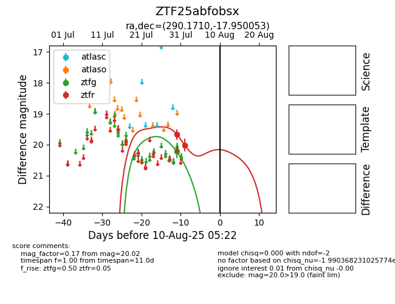

Target ZTF25abfobsx at 2025-08-06 17:45, see:
FINK: fink-portal.org/ZTF25abfobsx
Lasair: lasair-ztf.lsst.ac.uk/objects/ZTF25abfobsx
ALeRCE: alerce.online/object/ZTF25abfobsx
alt names
ZTF25abfobsx (ztf,fink)
coordinates:
equatorial (ra, dec) = (290.1710,-17.95005)
galactic (l, b) = (19.8609,-14.37567)
photometry
last ztfg=20.22, ztfr=20.02
1 ztfg, 2 ztfr detections
